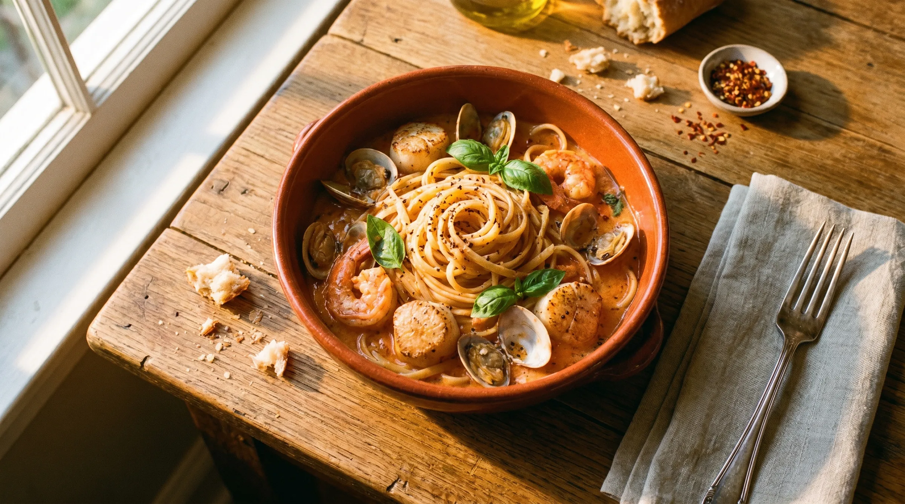
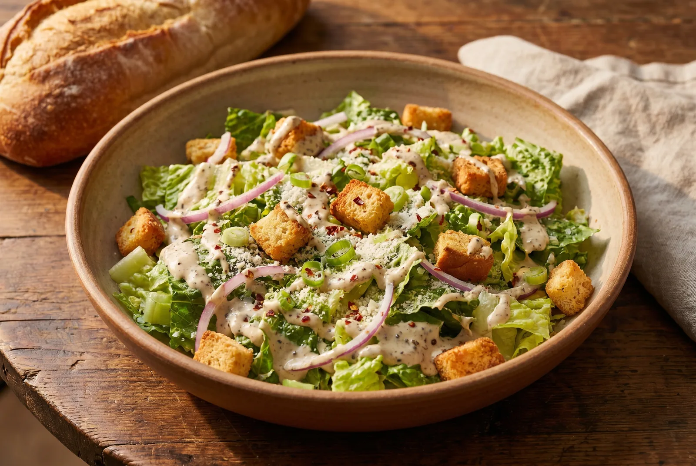
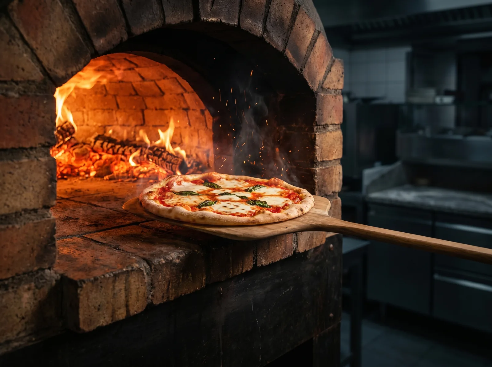
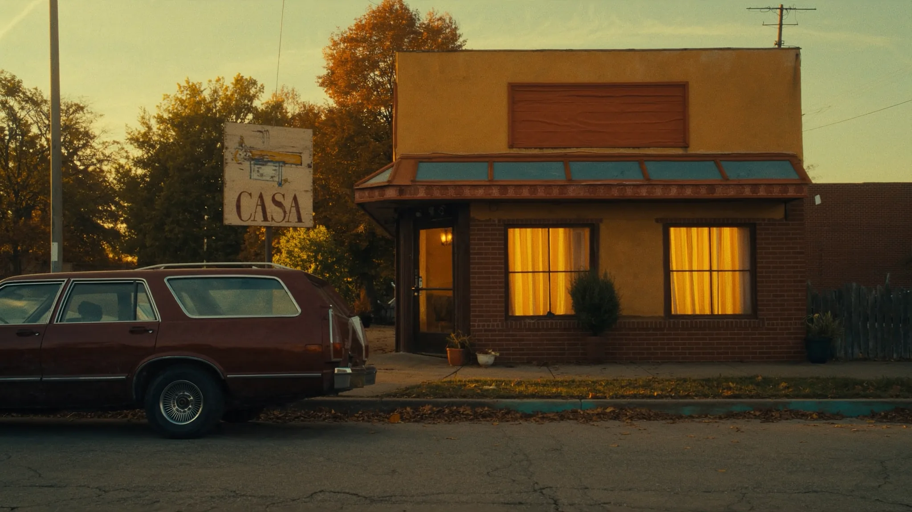

Most ordered
Insalata
The Casaburo
Crisp romaine, slivered red onion, romano, golden croutons — finished tableside with our peppery house dressing. Served with bottomless fresh-baked bread.
Ristoranti Italiano
Family owned. Wood-fired. Tableside.
Two friends. A small kitchen on Coldwater Road. A salad nobody could replicate. Almost fifty years later, four Fort Wayne dining rooms still pour the same bottomless bread basket and ladle the same brown-butter cream sauces that made Casa a household name.


“A house at the table is the only inheritance that matters.”
— A Casaburo family kitchen, seasoned over fifty years
Crisp romaine, slivered red onion, romano, golden croutons — finished tableside with our peppery house dressing. Served with bottomless fresh-baked bread.
Shrimp, scallops, baby clams and capers in a delicate tomato-cream — the dish Tom Casaburo says he could plate in his sleep, and probably has.

Wood-firedSan Marzano, milky fresh mozzarella, hand-torn basil, finished in a brick oven we light at 4 p.m. and don't put out until close.

Coldwater Road · Autumn 1977In 1977, Jimmy D'Angelo and Tom Casaburo took a lease on a quiet stretch of Coldwater Road and started cooking for their neighbors. The salad nobody else made. The bread always tableside. A wood-fired oven before anyone in Fort Wayne knew what to do with one.
Jimmy retired in '89. Tom and Sharon kept the lights on. Their son Jim and daughter T grew up in the kitchen and never really left — they run the daily operation of all four restaurants today, with the same recipes and a few of the same wooden spoons.
Long before alfredo was a Midwest kitchen staple, Casa was building sauces with butter, real cream and aged romano on every line.
Brick, hardwood, and patience. We lit the first one in the late '80s and have been pulling charred-bottom margheritas from it ever since.
A slow-turning rotisserie was an unfamiliar sight in 1990s Fort Wayne. The Pollo al Griglia was, and still is, the answer to it.
A house ritual since the first night. The basket lands warm. It comes back warm. There is no menu line item for it because there is no end to it.
411 W Dupont Rd
Fort Wayne, IN 46825
6340 Stellhorn Rd
Fort Wayne, IN 46815
7545 W Jefferson Blvd
Fort Wayne, IN 46804
4111 Parnell Ave
Fort Wayne, IN 46805